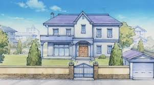
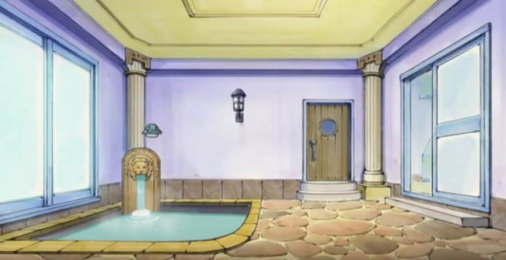
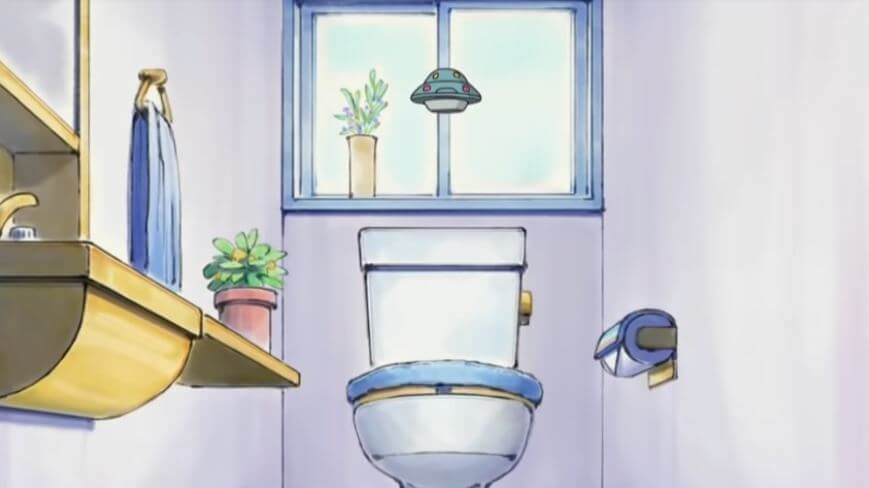

小夫家
概述
小夫家的住宅還有院子都是眾人當中最大的，從圍牆到家門口，可以容的下一步拉風跑車，可見其大小。院子當中還有一個小池子，小夫可以在池子當中玩遙控小艇。院子

房屋外觀
小夫家的住宅在水田版動畫中是高貴的紫色系，就連正門的設計都與眾不同，有 2 扇門大，光從建物的大小就看出這家人的氣派。
小夫的房間也有扇落地窗，床鋪也是以紫色系為主。床邊的牆上有一扇圖畫，床頭櫃則放有鬧鐘與模型。書桌則在床的對面一側。小夫房間裡似乎還有電視跟音響，有錢人果然不一樣。
客廳

小夫家客廳
小夫家的客廳有一台大的液晶電視。在水田版動畫裡，大雄還曾戴上 3D 眼鏡透過小夫家的電視體驗特效。

小夫家浴室

小夫家廁所
小夫家的 1 樓還有浴室與廁所，都有富麗堂皇的裝修，浴室更有歐式風格，財力果然不一般。2 樓還有貯存花瓶、書畫、盔甲、古代流傳下來的劍等價值連城的收藏室。